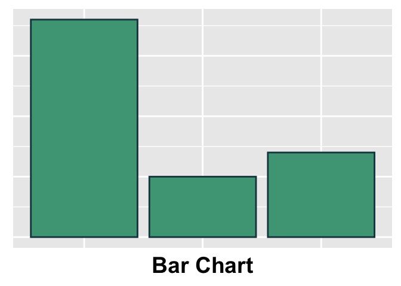
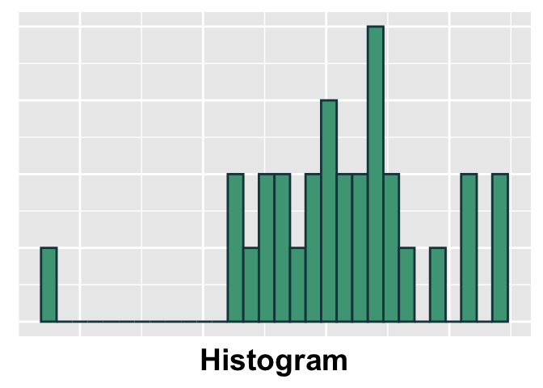

Intro to Today’s Lab
During today’s lab, you’ll apply some of the concepts discussed during this week’s lecture and familiarise yourself with SPSS. Each lab consists of several tasks, with corresponding questions you can answer. Please note that the questions are not required and not marked, although they do provide a helpful source of formative feedback that will help you gauge your understanding.
Learning Objectives
At the end of this lab, you will be able to:
- Import data into SPSS
- Check and reset variable types and codes
- Produce plots that allow you to visually assess your data’s distribution
- Check the descriptive statistics of your data
Lab Overview
In this lab, you’ll be working with data collected from the RMAP course studies. This specific dataset contains variables that measure interpersonal relationships and general well-being. You’ll use these data to generate descriptive statistics and visualisations.
| Variable Name | Description |
|---|---|
| ID | Participant ID |
| AgeBracket | Levels: 18-33; 34-48; 49-64 |
| Gender | Levels: Male; Female; Non-binary/Third Gender; Prefer not to say |
| Ethnicity | Participant ethnicity |
| HighestEducation | Highest level of education completed |
| HRQOL1 | Participant’s self-reported general health |
| HRQOL2 | Participant’s estimate of the number of the past 30 days that their health was not good |
| MSPSS1 | Perceived social support item 1; Levels: 1 = Strongly Disagree; 2 = Disagree; 3 = Somewhat Disagree; 4 = Neutral; 5 = Somewhat Agree; 6 = Agree; 7 = Strongly Agree |
| MSPSS2 | Perceived social support item 2; Levels: 1 = Strongly Disagree; 2 = Disagree; 3 = Somewhat Disagree; 4 = Neutral; 5 = Somewhat Agree; 6 = Agree; 7 = Strongly Agree |
| MSPSS3 | Perceived social support item 3; Levels: 1 = Strongly Disagree; 2 = Disagree; 3 = Somewhat Disagree; 4 = Neutral; 5 = Somewhat Agree; 6 = Agree; 7 = Strongly Agree |
| MSPSS4 | Perceived social support item 4; Levels: 1 = Strongly Disagree; 2 = Disagree; 3 = Somewhat Disagree; 4 = Neutral; 5 = Somewhat Agree; 6 = Agree; 7 = Strongly Agree |
| MSPSS5 | Perceived social support item 5; Levels: 1 = Strongly Disagree; 2 = Disagree; 3 = Somewhat Disagree; 4 = Neutral; 5 = Somewhat Agree; 6 = Agree; 7 = Strongly Agree |
| MSPSS6 | Perceived social support item 6; Levels: 1 = Strongly Disagree; 2 = Disagree; 3 = Somewhat Disagree; 4 = Neutral; 5 = Somewhat Agree; 6 = Agree; 7 = Strongly Agree |
| MSPSS7 | Perceived social support item 7; Levels: 1 = Strongly Disagree; 2 = Disagree; 3 = Somewhat Disagree; 4 = Neutral; 5 = Somewhat Agree; 6 = Agree; 7 = Strongly Agree |
| MSPSS8 | Perceived social support item 8; Levels: 1 = Strongly Disagree; 2 = Disagree; 3 = Somewhat Disagree; 4 = Neutral; 5 = Somewhat Agree; 6 = Agree; 7 = Strongly Agree |
| MSPSS9 | Perceived social support item 9; Levels: 1 = Strongly Disagree; 2 = Disagree; 3 = Somewhat Disagree; 4 = Neutral; 5 = Somewhat Agree; 6 = Agree; 7 = Strongly Agree |
| MSPSS10 | Perceived social support item 10; Levels: 1 = Strongly Disagree; 2 = Disagree; 3 = Somewhat Disagree; 4 = Neutral; 5 = Somewhat Agree; 6 = Agree; 7 = Strongly Agree |
| MSPSS11 | Perceived social support item 11; Levels: 1 = Strongly Disagree; 2 = Disagree; 3 = Somewhat Disagree; 4 = Neutral; 5 = Somewhat Agree; 6 = Agree; 7 = Strongly Agree |
| MSPSS12 | Perceived social support item 12; Levels: 1 = Strongly Disagree; 2 = Disagree; 3 = Somewhat Disagree; 4 = Neutral; 5 = Somewhat Agree; 6 = Agree; 7 = Strongly Agree |
| HRQOL | Total Health-Related Quality of Life score |
| PWB | Total Psychological well-being score |
| WEMWBS | Total mental well-being score |
Import Data & Check Variables
In this course, SPSS will be used to perform the majority of your tasks. You can download today’s data onto your device by clicking here or checking this week’s folder on the course Learn page (requires university login).
Once you’ve opened your data, the Variable View tab allows you to make adjustments to your variable characteristics. Recall that data can be measured in multiple formats, and these scales of measurement will affect how data may be described and analysed. In Variable View, you can adjust this measurement format. This is useful, as SPSS does not always properly identify your variable format.
You can also label your variable levels in Variable View. This is useful when nominal data are coded numerically (e.g., ‘No’ = 0; ‘Yes’ = 1). When you add labels, you can easily see what the values of nominal variables represent. It is important to always include a coding key, so that anyone who works with the data will know how to interpret the numeric labels used and can make appropriate interpretations.
Your Tasks
Click here for a hint
Check under the File tab in SPSS. What is the difference between the ‘Open’ and ‘Import Data’ options?
After the data are imported, navigate to the Variable View tab and check the value in the Measure column for each variable. Do the labels used by SPSS match the standard levels of measurement? If you aren’t sure, check the Levels of Measurement section from this week’s required reading. Think about what kind of data each of your variables represents.
Click here for the solution
Opening Your
Data
Click File>Open>Data. Navigate to the folder where you’ve stored ‘Week1LabData.sav’ and select the file.
Checking
Variable Measures
To check that your variables are labeled as the correct scale of measurement, look at the ‘Measure’ column under the Variable View tab.
SPSS labels the data as:
- Nominal: data that fall into discrete categories that have no information regarding order (e.g. eye colour)
- Ordinal: data that fall into discrete categories that have some kind of ordering information (e.g. Likert Scale responses)
- Scale: continuous/numeric data; individual values have some kind of numeric relationship beyond order (e.g. reaction time in seconds).
Adding Labels
to Variables
To associate a label with each value of a variable, you’ll use the Values column under the Variable View tab.
Select the MSPSS1 x Values cell and click the dots to bring up the
Value Labels box. Use the \(+\) to add a new label. In the Value
column, type the value exactly as it is recorded in your
data. (e.g., 1) In the Label column, add the label you would
like to associate with that specific value (e.g. ‘Strongly Disagree’).
Continue adding labels using \(+\)
until you’ve labeled all values in the MSPSS column.

Click ‘OK’. If you’ve done this properly, you’ll see that each numeric value is now associated with a character label.
Computing Variables
Sometimes, you’ll need to use your variables to compute a new value or variable (e.g., a composite score from subscores). SPSS allows you to perform a wide range of calculations on your variables. In today’s lab, the data includes the individual responses to the 12 questions that make up the Perceived Social Support scale (MSPSS), and you need to compute the total MSPSS score.
Your Task
Click here for a hint
Look under the Transform tab to find the function you need.
Click here for the solution
To compute a new value from a current column, navigate to
Transform > Compute Variable. Type the name for the new
variable (MSPSStotal) into the ‘Target Variable’ box. Place
each MSPSS item in the ‘Numeric Expression’ box with with a plus sign in
between them:

Click ‘OK’, and you should have a new column that reflects the total Perceived Social Support score.
Check Frequency Data
Before doing any sort of analysis, it’s important to first check the data to make sure everything is as expected. With categorical data, one way we can do this is to inspect the frequency of observations in each group. This allows you to evaluate the following:
- Are observations distributed relatively equally or are there major differences across groups?
- Are there any groups with a limited number of observations?
- Are there any missing datapoints?
- Are there any values outside the expected range?
Your Task
Are any of these groups limited in size? If so, consider how this might affect your ability to make generalisable claims about this group.
Use the frequency tables to answer the following questions:
Click here for a hint
You’ll find what you need under the Analyze tab.
Click here for the solution
Select Analyze>Descriptives>Frequencies. Select
AgeBracket, Gender, Ethnicity,
HighestEducation, HRQOL1, and
HRQOL2, and use the arrow to move them into the Variable
box. Make sure ‘Display frequency tables’ is checked.
The first table is a summary of all the requested variables. The
missing data information can be found here:

Next, if ‘Display frequency tables’ was checked, individual frequency tables are shown for each variable. Here, the number of observations in each group/level are shown:

Visualise Distribution of Data
Another useful way to check variable distribution is to visualise the data. Depending on the data type, a bar chart or a histogram could be used.

Your Tasks
Click here for a hint
A histogram will allow you to visualise the distribution of continuous variables. Bar plots allow you to check the distribution of categorical data. You’ll need to produce a separate plot for each variable.
Click here for the solution
For Categorical Variables:
Select Analyze>Descriptive Statistics>Frequencies. Add
HRQOL2 to the ‘Variable(s)’ box, uncheck ‘Display frequency
tables’, and then click ‘Charts…’. Select ‘Bar charts’. Note at the
bottom that you can either plot the raw frequencies or percentages.
Here, you can leave ‘Frequencies’ checked. Click ‘Continue’, then
‘OK’.
When checking the distribution of categorical variables, check whether all groups are well represented. Consider the questions from the Frequency Data portion of this lab.

For Continuous Variables:
Select Analyze>Descriptive Statistics>Frequencies. Add
WEMWBS and MSPSS to the ‘Variable(s)’ box,
uncheck ‘Display frequency tables’, and then click ‘Charts…’. Select
‘Histograms’, then tick ‘Show normal curve on histogram.’ Click
‘Continue’, then ‘OK’.
Have a look at the output. If a variable is normally distributed,
most observations will fall near the mean, while more extreme values are
less common. The bars should generally fall along the black normal curve
line. WEMWBS generally follows the black line:

On the other hand, MSPSS is noticeably negatively skewed
(scores are clustered in the upper range and there is a long tail of
scores in the lower range):

Note: You can also produce bar plots using Graphs>Bar, selecting ‘Simple’, and adding the variable you wish to visualise to the ‘Category Axis’ box. You can produce histograms using Graphs>Histogram and adding the variable you wish to visualise to the ‘Variable’ box.
Distribution & Central Tendency
When data are skewed, it can impact how well the measure of central tendency represents the sample. Use the plot below to see how different levels of skewness can impact the mean and median.
Check Central Tendency & Measures of Variability
When preparing to perform analysis, one of the most important steps is to check the descriptive statistics of your variables. These values are useful summary metrics and may provide insight into patterns in your data.
Your Tasks
For all continuous variables in your data:
Click here for a hint
To get each of these descriptive statistics, navigate to Analyze>Descriptive Statistics>Frequencies. Consider how the data’s distribution should impact the measure of central tendency you will use to describe the variable.
Click here for the solution
To get all 3 measures of central tendency, you’ll need to select Analyze>Descriptive Statistics>Frequencies, then put the variables of interest into the ‘Variable(s)’ box. Click ‘Statistics’ and select the options for ‘Mean’, ‘Median’, ‘Std. Deviation’, ‘Maximum’ and ‘Minimum’.

Although continuous variables could be described using both mean and median, the mean is often the most appropriate when the data are not skewed. The median may be more appropriate when the data are skewed, as the median is less impacted by extreme scores. Data will be reported in table format in the output.